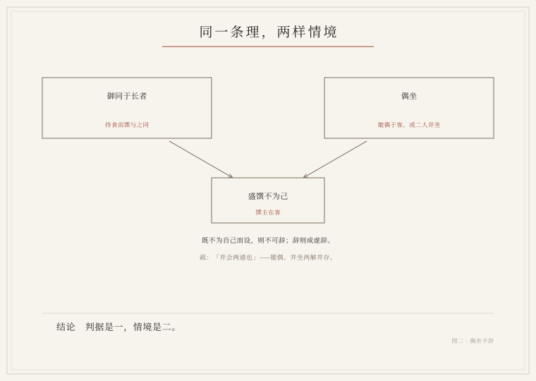

曲礼上 · 一·八十二 · 第 80 课
偶坐，或解为与客相伴而坐，或解为二人并坐。两种解法都通向一句注：「盛馔不为己」。馔既不为己设，则不必辞。
说什么事：偶坐不辞。
落在哪一层：仪，兼及分。与上节同一条理，而情境更曲。
为何编在此位：上节是侍长者而不辞，此节是陪客而不辞。一为同馔，一为陪坐，辞之与否皆系于馔之所为。
【经】偶坐不辭。
【注】盛饌不為己。
偶 疏两解：一「偶，媲也」，谓彼为客设馔而召己往媲偶于客共食；一「偶，二也」，谓与他人俱坐。
不辞 不辞盛馔。
盛馔不为己 注五字。此为两解共同的根据。
两说并存 疏「并会两通也」。郑注不作取舍，疏亦并存。
与人并坐同食，不辞让这一桌盛馔。
一节十八字，注五字。理与上节同：辞盛馔是常礼，其例外在「馔不为己设」。上节因侍长者而馔不在己，此节因陪客而馔不在己——路径不同，判据是一。
第一层 常礼 受盛馔而辞，是自知其分。此礼不可废。
第二层 例外之据 馔为客设，己为陪；馔本不为己设，则辞之无所指。辞一个不属于自己的东西，是虚辞。
第三层 两解之一致 媲偶于客，则馔主在客；二人俱坐，则主人之意不必在己。二说虽异，皆归于「不为己」。
第四层 虚辞之弊 礼之辞让，须有着落。无所指而辞，只成一套动作，反使主人要多一番解释。
与今日何干 人家请客，你是被叫来作陪的，就不必对满桌菜再三推辞。这一桌本来就不是为你摆的。
| 左 | 右 |
|---|---|
| 偶坐 | 媲偶于客，或二人并坐 |
| 不辞 | 不辞盛馔 |
| 盛馔不为己 | 馔本为客设，己为陪 |
| 媲偶之解 | 彼为客设馔，召己共食 |
| 并坐之解 | 主人意不必在己 |
| 虚辞非礼 | 无所指而辞，只成动作 |
画一案三席：正中一席馔最丰、器最正；左侧一席馔与正中同而器略简；右侧一席仅有餐具一副、馔未上。三席之间以席边为界。不画人、不写文字。赭色只在正中一席的器盖。
